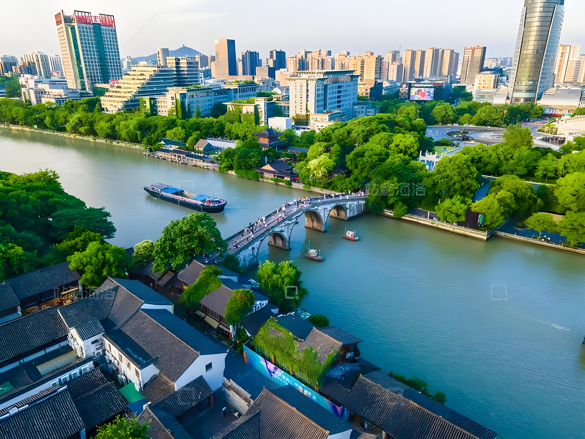
大运河自古代开凿成型，在近代迎来命运转折，从漕运命脉走向城市文化遗产。
京杭大运河并非一日建成，它是世界上里程最长、工程最大的古代运河。它不仅是古代中国的水上高速公路，更是历代封建王朝控制江南经济命脉的利器。从吴越争霸的军事水道，到隋唐帝国的南北大动脉，再到元明清三代的京师生命线，大运河的每一次变迁，都伴随着王朝的兴衰与城市的繁荣。
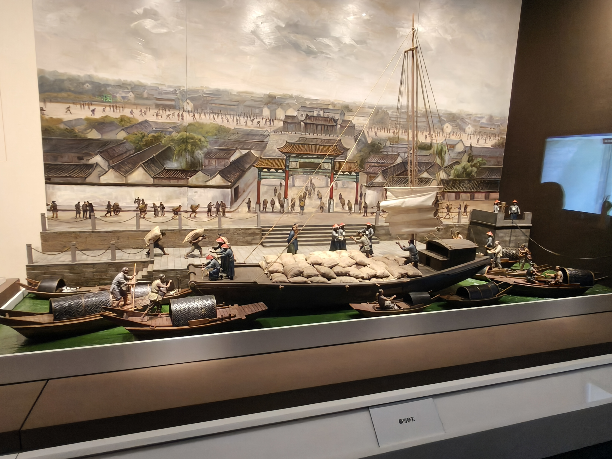
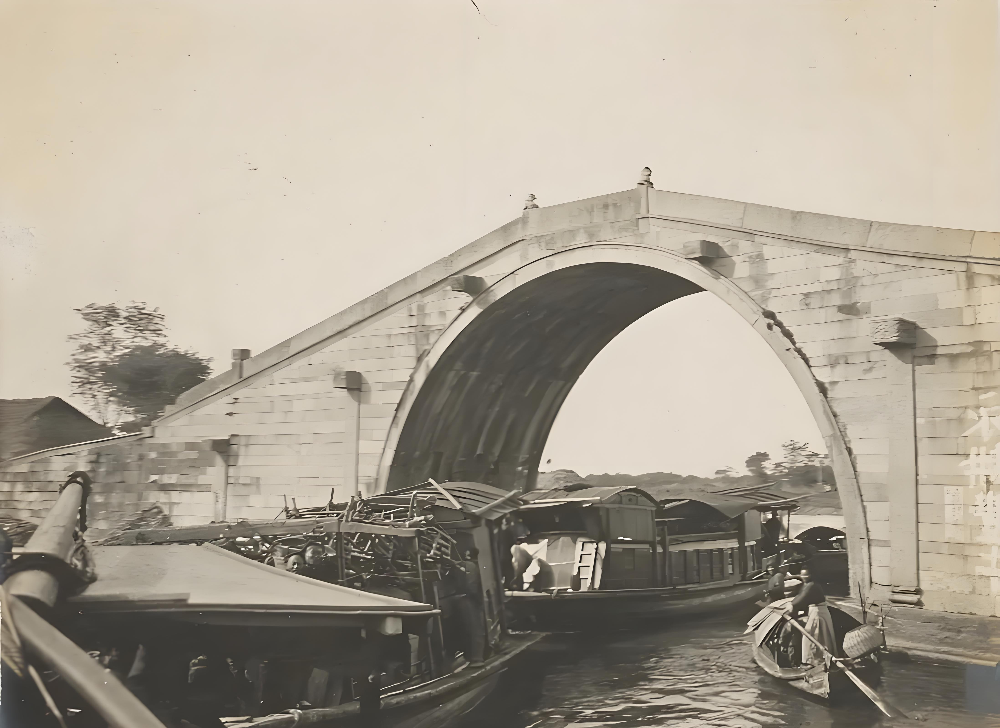
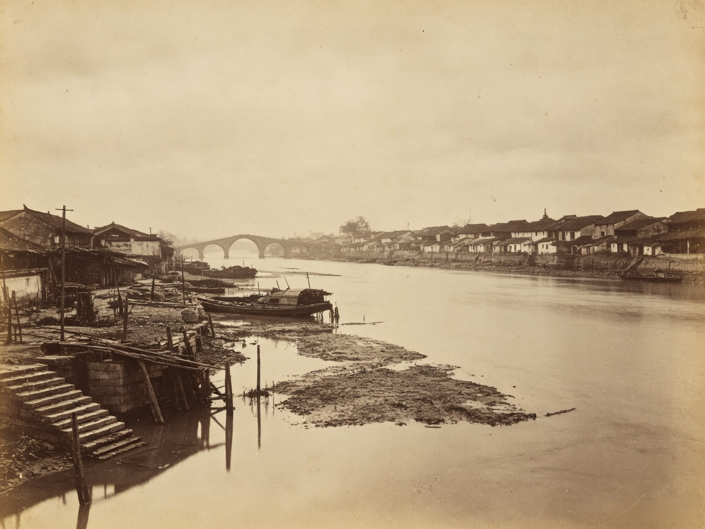
1842年，鸦片战争爆发，英军在长江与大运河交汇处的镇江取得决定性胜利。这一战不仅切断了清政府的漕运命脉，更迫使清政府签订《中英南京条约》，中国的大门被坚船利炮轰开。随着通商口岸的开放，传统的自给自足经济受到严重冲击，大运河的命运也随之迎来了前所未有的转折。
1853年后，太平天国运动占据南京和安徽沿江一带长达十多年。战火蔓延之处，运河漕运被迫全面中断。战争极其惨烈，运河沿线的主要城市均遭受重创，部分古老的河道、闸口与码头甚至被焚毁，千年繁华毁于一旦，大批商贾和百姓流离失所。
1855年，黄河在河南铜瓦厢决口改道，导致运河山东段逐渐淤塞废弃。清政府内忧外患，国库空虚，根本无力组织大规模疏浚。无奈之下，清政府不得不将原本依靠运河的漕粮运输改走海路。失去了国家层面的维护，运河的衰败已成定局。
1872年，轮船招商局在上海成立，正式使用现代火轮船承运漕粮。同时，津浦铁路开始在中国大地上铺设。随着现代交通的崛起，杭州段的运河泥沙淤积日益严重，维护经费极度匮乏。延续千年的漕运体系走向彻底瓦解，拱宸桥一带的传统商贸也迎来了极其痛苦而深刻的转型。
1911年，津浦铁路全线通车。火车以远超舟船的运力和速度，瞬间改变了中国的交通格局。南北货运大量转由铁路运输，大运河以及沿线城市的交通地位一落千丈，逐渐被时代边缘化。
进入民国后，时局持续动荡，军阀混战，政府长期缺乏对运河的系统性治理。杭州段运河堤岸坍塌损毁、航道严重淤塞，曾经舟楫往来的沿岸码头与市镇商贸急剧衰退。失去了漕运功能的大运河，从国家的经济水运命脉，逐步沦为一条缺乏维护、杂草丛生、甚至散发着臭气的荒废河道，令人唏嘘。
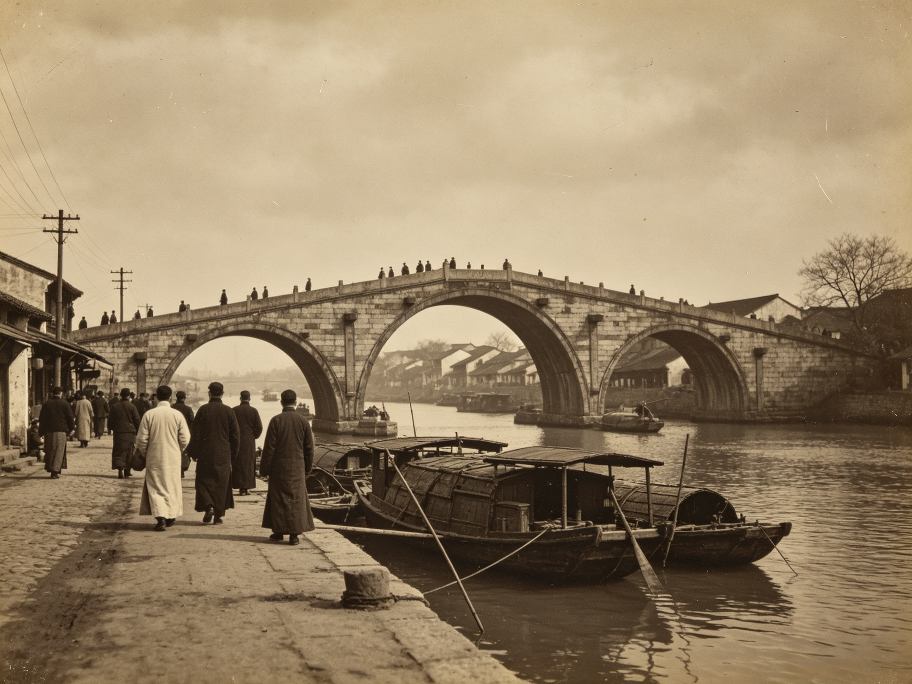
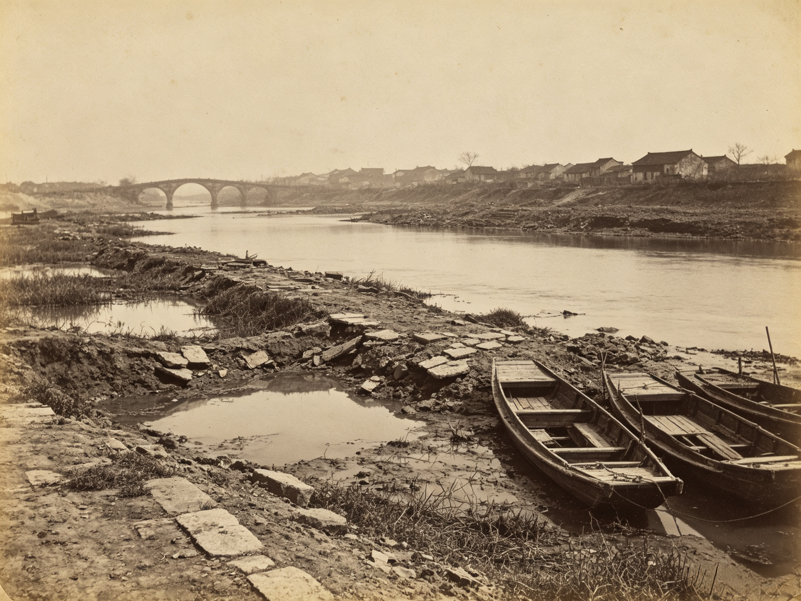
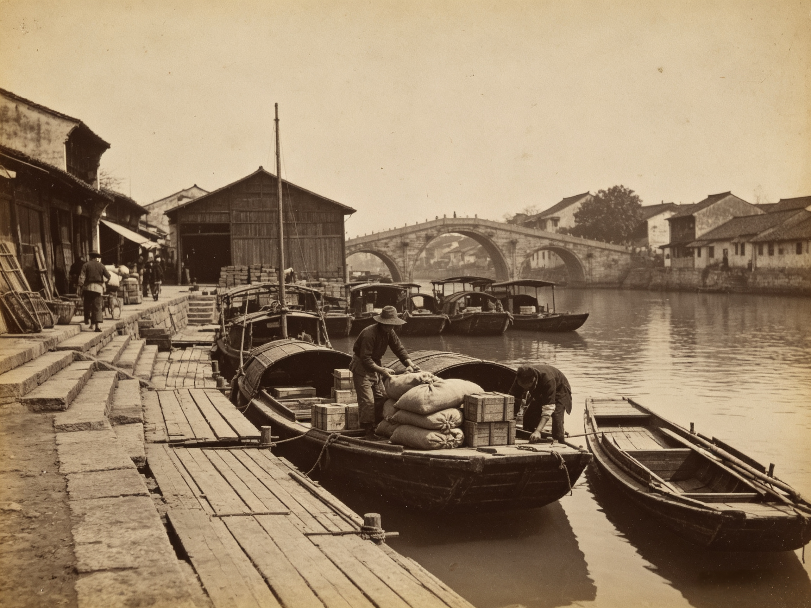
新中国成立后，百废待兴，国家立即开展大规模运河整修。经过无数劳动者的肩挑手扛，运河重新发挥航运、灌溉、防洪和排涝等多种作用。部分河段进行了拓宽加深、截弯取直，新建了许多现代化码头和船闸。
1988年底，京杭运河与钱塘江沟通工程建成，彻底将江、河、海衔接起来，实现了杭州人“江河互通”的千年梦想，极大地促进了浙江乃至华东地区的经济发展。
杭州段重点建设了三堡船闸，清理了百年的淤泥，彻底恢复了航道通航能力。运河不再局限于传统的漕运，转型为服务民生、工业运输和城市调水的现代水利大通道，再次焕发了蓬勃生机。
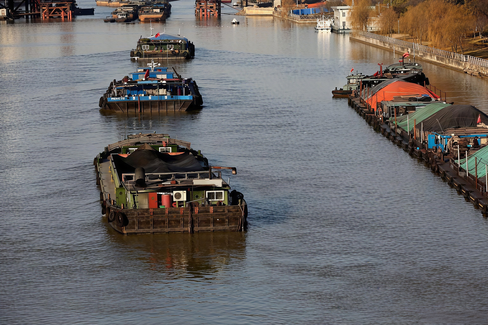
2002年，原本只负责通航的京杭大运河被正式纳入“南水北调”三线工程之一，成为中国南水北调东线工程的重要环节。长江下游的甘甜江水通过运河，被源源不断地送往缺水的山东和河北等地，古老的运河承担起了缓解北方水资源危机的全新国家使命。
2014年，在第38届世界遗产大会上，中国大运河成功列入《世界遗产名录》。杭州拱宸桥、桥西历史街区等遗产点完成了保护性更新，运河两岸的工厂和棚户区被搬迁，取而代之的是博物馆、文创园和滨水公园。运河从一条单纯的交通河道，彻底转型为承载城市记忆、生态景观与文旅价值的“活态文化遗产”。
2022年，经过多年的生态补水与沿线整治，京杭大运河实现了百年来的首次全线水流贯通。断流已久的河道重新充盈，沉睡的古运河全面复苏，不仅改善了沿线生态环境，更重新连接了南北的文化与经济脉络，焕发出前所未有的全新生机。
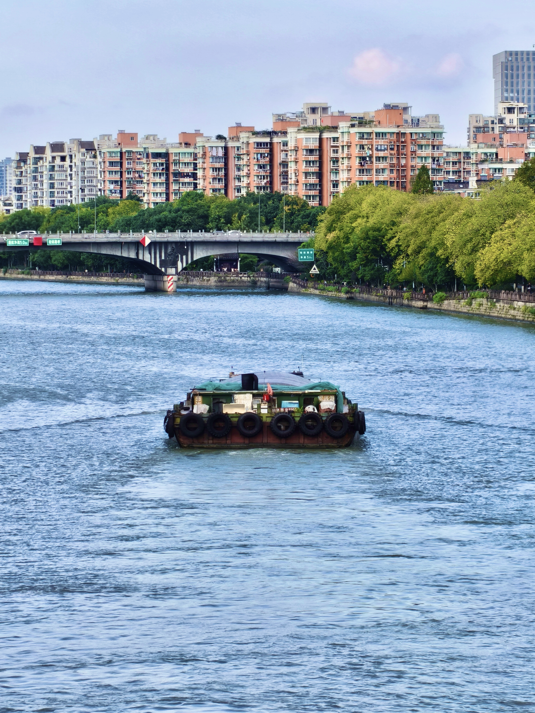
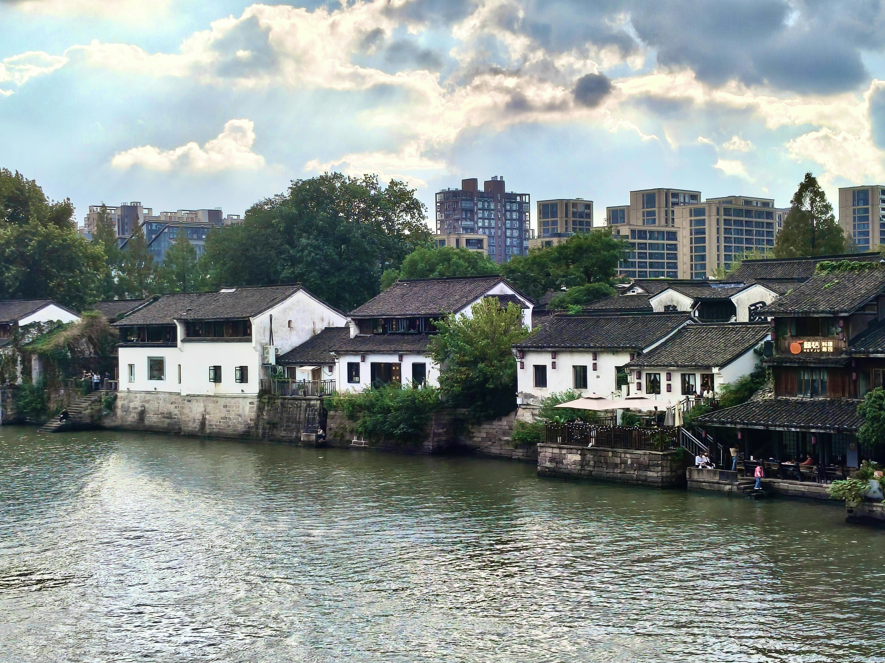
大运河肇始于春秋，兴盛于隋唐宋元明清，丰厚的古代遗存奠定这条水道的根基。而在近代，它又经历漕运衰落、河道荒废、治理复兴的曲折历程。以下为本馆典藏历代运河相关实物展品，每一件都在诉说着这条河的沧桑巨变。
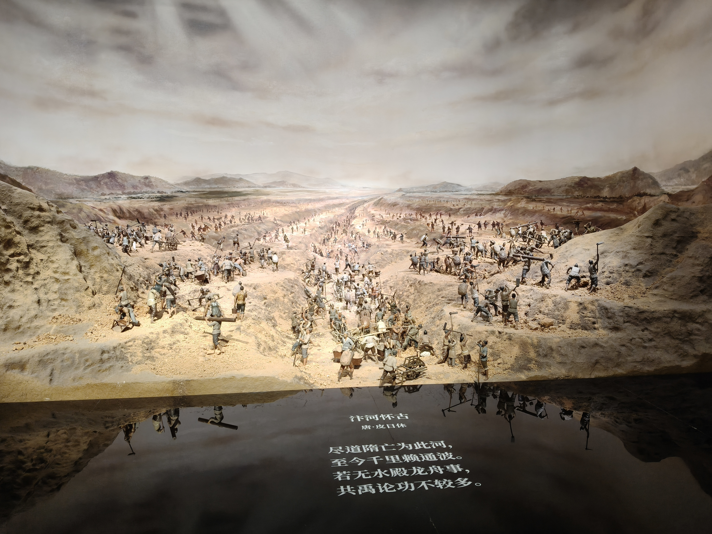
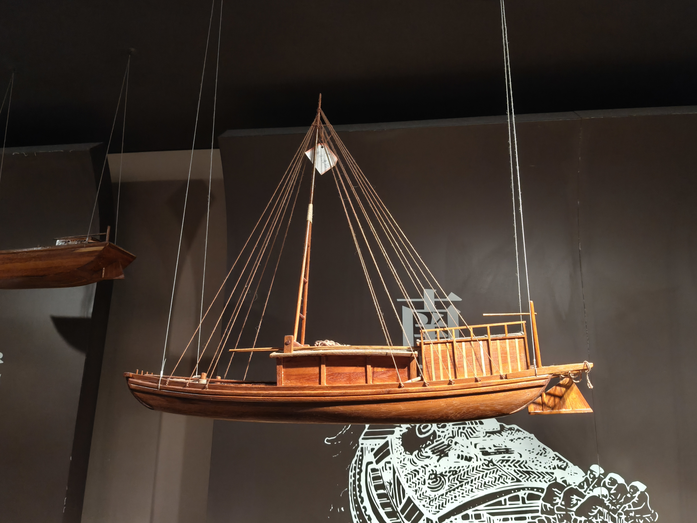
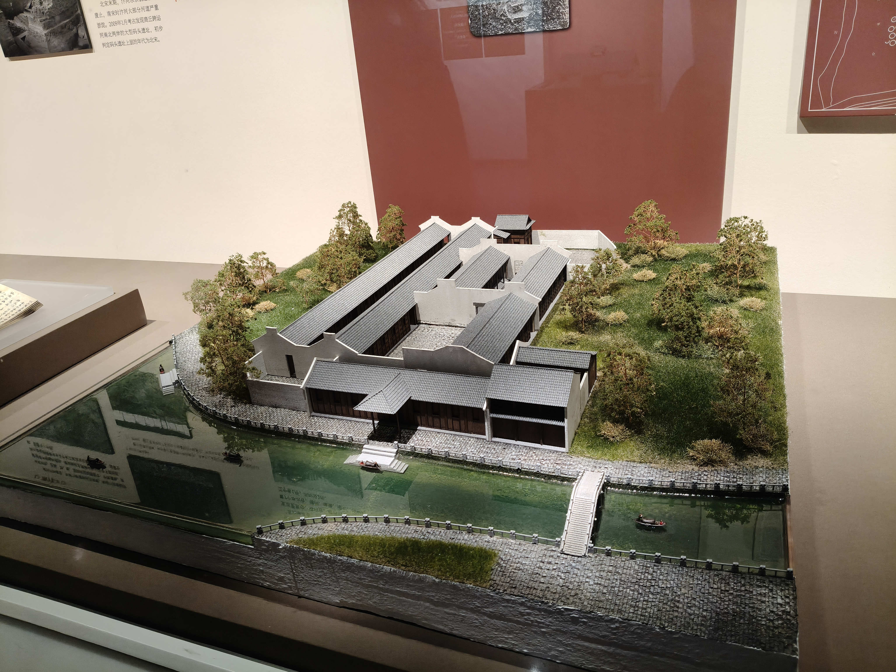
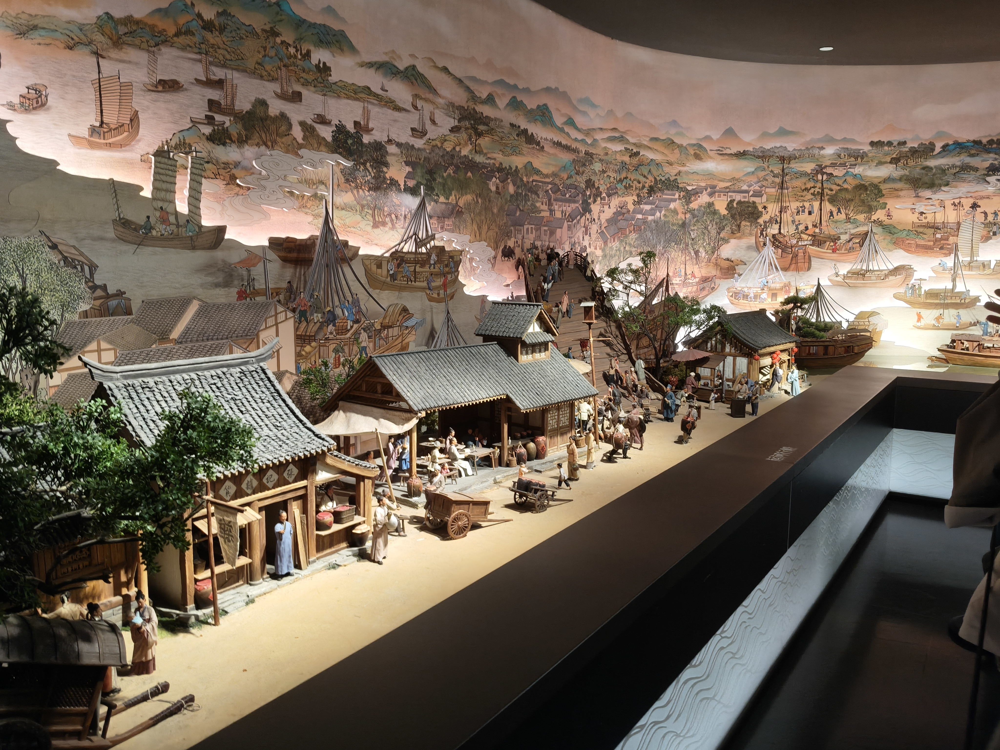
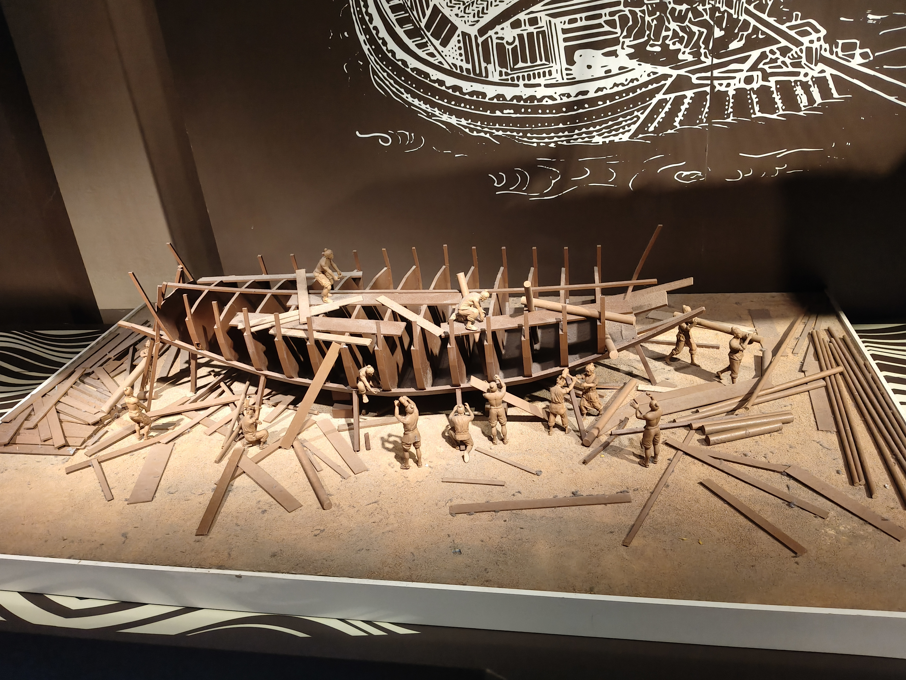
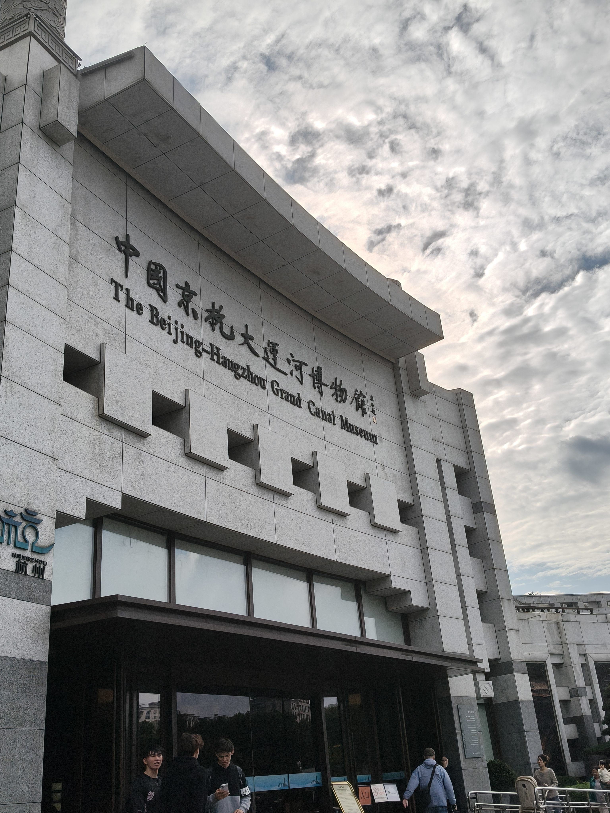
线上科普内容有限，更多真实史料、文物细节、近代运河变迁故事，欢迎走进中国京杭大运河博物馆实地参观学习。